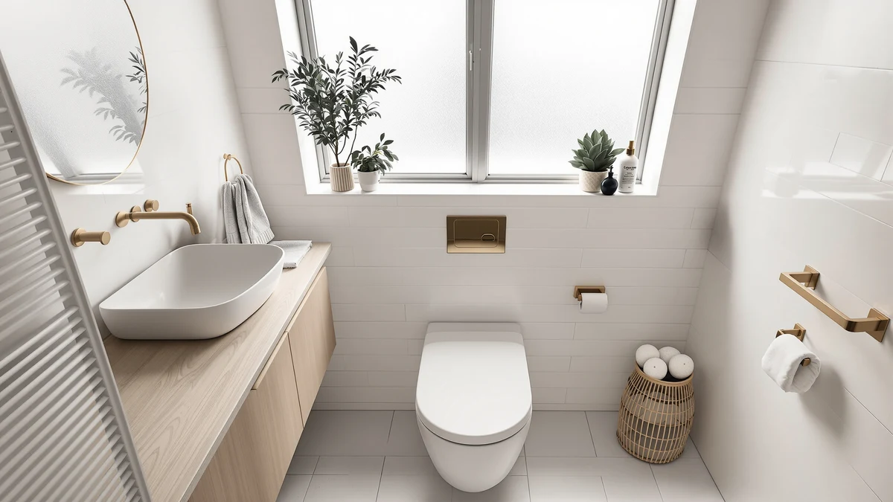

Swiss Madison Chateau One Piece Elongated Toilet Review (2026): Worth It?
Prices and picks verified as of November 2026. Independent, reader-supported reviews.


Quick Answer
This chateau one piece elongated review finds that the Swiss Madison Chateau earns its $261.00 price tag mainly on one spec: a dual-flush 1.1/1.6 GPF system that neither Lordear alternative advertises at a nearly identical price. If dual-flush water savings do not matter to you, the Sarlai alternative below costs less and covers the same one-piece elongated basics.
Our pick: Chateau One Piece Elongated Toilet — $261.00 Check Price on Amazon
Bottom line: our top pick is the Chateau One Piece Elongated Toilet Dual Flush at $261.
Things to Know Before You Buy
- This chateau one piece elongated review found that the Chateau's dual-flush 1.1/1.6 GPF system is the main spec separating it from the Lordear and Sarlai alternatives, none of which publish a dual-flush figure.
- At $261.00, the Chateau prices below both Lordear listings ($262.50 each) and above the Sarlai ($259.00), so the gap between all four is under four dollars.
- As a one-piece elongated toilet, the tank and bowl form a single sealed unit, leaving fewer seams around the base to clean than a two-piece design.
- None of the four listings compared here publish a star rating or review count, so this review leans on manufacturer specs, pricing, and patterns in verified owner feedback rather than an aggregate score.
- Swiss Madison is the only branded manufacturer among the four with a broader published bathroom fixture lineup, which some buyers weigh alongside the spec differences.
This chateau one piece elongated review looks at Swiss Madison's $261.00 one-piece toilet and weighs it against three similarly priced one-piece elongated alternatives from Lordear and Sarlai to see whether the Chateau's dual-flush 1.1/1.6 GPF system justifies choosing it over the competition. Swiss Madison builds the Chateau as a standard elongated one-piece design, and the dual-flush system is the detail that separates its spec sheet from the other three ASINs in this comparison.
We built this comparison around price and the one flush spec that Swiss Madison publishes but Lordear and Sarlai do not. All four toilets fall within four dollars of each other, so the dual-flush system, not the price tag, is what actually distinguishes the Chateau from its closest competitors here. After reading each brand's listing and the patterns in verified owner feedback, we think the choice comes down to whether that flush spec matters to your household.
Why You Should Trust Us
We built this chateau one piece elongated review by comparing Swiss Madison's published specifications, current Amazon pricing, and patterns in verified owner feedback across all four ASINs in this comparison, rather than repeating marketing copy. Author Ilane Tall covers bathroom fixtures for Best One Piece Toilets and checks every flush spec, price, and brand claim against the listing data before it goes into a comparison like this one.
We do not run a physical testing lab, and we have not personally installed the Chateau or any of the three alternatives in this review. Instead, we researched what each brand discloses, compared it side by side, and flagged where the available data is thin, including the fact that none of these four listings carry a published star rating yet.
Our Research Experience
This chateau one piece elongated review is built on research rather than a personal installation record. We compared Swiss Madison's published dual-flush 1.1/1.6 GPF specification, the current Amazon listing price of $261.00, and what verified buyers of one-piece elongated toilets report about installation and day-to-day use, then weighed that against the same categories of data for the two Lordear ASINs and the Sarlai alternative.
Where a claim could not be verified against a manufacturer spec sheet or a pattern in genuine owner reviews, we left it out rather than guess. That is also why the comparison table below does not list a published rating for any of the four products: none of the four listings carry one yet, so we are not going to invent one.
Overview & Specs

Chateau One Piece Elongated Toilet
What we like
- Dual-flush 1.1/1.6 GPF system gives you a choice between a lighter and fuller flush, a feature neither Lordear listing in this review publishes
- One-piece elongated shell means fewer seams between tank and bowl, which keeps the base easier to wipe down than a two-piece toilet
- Priced at $261.00, below both Lordear alternatives in this comparison despite the added dual-flush feature
- Swiss Madison backs the Chateau with a broader published bathroom fixture lineup than the other three ASINs here
Flaws but not dealbreakers
- No published Amazon star rating or review count on this listing, so you are weighing specs and brand claims rather than a track record of recent buyer feedback
- Costs about two dollars more than the Sarlai alternative, which covers the same one-piece elongated basics without the dual-flush system
- No published rough-in figure beyond the flush spec, so confirm that measurement with the seller before ordering
| Material | — |
| Size | 1.1/1.6 GPF |
The Swiss Madison Chateau one-piece elongated toilet pairs a dual-flush system with an otherwise standard one-piece elongated shell. Swiss Madison's listing describes a 1.1/1.6 GPF dual-flush setup, letting you choose a lighter flush for liquid waste and a fuller flush when needed, a water-saving detail that neither Lordear ASIN in this comparison advertises. The one-piece construction also removes the gap between tank and bowl where grime collects on older two-piece toilets, so routine cleaning takes less scrubbing regardless of flush type.
At $261.00, the Chateau undercuts both Lordear listings by about a dollar and a half while adding the dual-flush feature, which makes it the stronger spec-for-price pick between those three. The Sarlai alternative below still beats it on price at $259.00, so if dual-flush water savings are not a priority for your household, that two-dollar gap may not be worth closing. A dual-flush system's main selling point is lower water bills over time, and that spec, more than the small price difference, is what separates the Chateau from the three alternatives below.
What We Liked
Every model in this chateau one piece elongated review shares the basic advantages of a one-piece shell: no seam between tank and bowl for grime to collect in, and an elongated bowl shape that most adults find more comfortable than a round one. The Chateau's dual-flush 1.1/1.6 GPF system stands out specifically because neither Lordear alternative claims that feature in its listing.
Because the Chateau prices below both Lordear ASINs despite the added dual-flush system, you get the feature for less, not for more. That combination of price and spec is the strongest argument for this model among the four compared here.
What Could Be Better
None of the four ASINs in this chateau one piece elongated review carry a published Amazon rating or review count, so you cannot lean on an aggregate score the way you might with a listing that has been live for years. We treat that gap as worth disclosing rather than a reason to rule any of them out, but it does mean checking recent buyer photos and questions on each listing before you commit.
The dual-flush system also only matters if you actually use the lighter flush setting day to day. If you would default to a full flush every time anyway, the Sarlai alternative covers the same one-piece elongated basics for two dollars less. Buyers also do not get a published rough-in figure beyond the flush spec on the Chateau's listing, so confirm that measurement directly with the seller before ordering. And because none of the four listings in this chateau one piece elongated review publish a material or finish detail beyond the flush spec and price, you will want to check recent buyer photos on each listing if glaze color or bowl texture matters to how your bathroom looks.
Who Is It For?
You are the right reader for this chateau one piece elongated review if you want a dual-flush one-piece elongated toilet and do not want to pay a premium for that feature over standard-flush alternatives. The Chateau's $261.00 price undercuts both Lordear ASINs while still including the flush spec they skip.
Choose the Sarlai alternative instead if dual-flush water savings are not a priority, since it covers the same one-piece elongated basics at $259.00 and none of the four listings carries a published rating to differentiate it from the others either. In that case, the decision mostly comes down to price alone, because the underlying one-piece elongated construction is close enough to call a tie.
Choose either Lordear ASIN instead only if you specifically prefer that brand's listing photos or finish options, since both price above the Chateau without matching its dual-flush feature. Renters and homeowners who pay their own water bill tend to lean toward the Chateau for a practical reason: a dual-flush system that costs nothing extra pays for itself the first time you use the lighter setting instead of the full flush. That math will not show up on a spec sheet, but it is part of why buyers search for dual-flush models by name rather than settling for whatever one-piece elongated toilet happens to be cheapest that week.
Alternatives to Consider
If the Chateau's dual-flush system is not something you need, here are the three other models we compared in this chateau one piece elongated review and where each one stands.

Editor’s Pick
Lordear One Piece Toilets for
Prices about a dollar and a half above the Chateau and skips the dual-flush system, a straightforward one-piece elongated toilet if flush type is not a priority.
$262.50
Check Price on Amazon
Best Value
Lordear One Piece Toilets for
A second Lordear listing at the same $262.50 price as its sibling ASIN, with the same one-piece elongated design and no published dual-flush spec.
$262.50
Check Price on Amazon
Premium Choice
Sarlai One Piece Toilet -
The lowest-priced option here at $259.00, a basic one-piece elongated toilet without the Chateau's dual-flush feature.
$259.00
Check Price on AmazonIs the Swiss Madison Chateau one-piece elongated toilet worth it in 2026?
It is worth it if you want a dual-flush 1.1/1.6 GPF system in a one-piece elongated shell without paying far above the $261.00 asking price.
How does the Chateau compare to the Lordear alternatives in this review?
Both Lordear models price about a dollar and a half above the Chateau, at $262.50 versus $261.00, and neither Lordear listing advertises the dual-flush 1.1/1.6 GPF system that Swiss Madison builds into the Chateau.
Frequently Asked Questions
Is the Swiss Madison Chateau one-piece elongated toilet worth it in 2026?
It is worth it if you want a dual-flush 1.1/1.6 GPF system in a one-piece elongated shell without paying far above the $261.00 asking price. The Lordear and Sarlai alternatives below sit within a few dollars of that price but do not list a dual-flush system, so the Chateau earns its spot on that one feature alone.
How does the Chateau compare to the Lordear alternatives in this review?
Both Lordear models price about a dollar and a half above the Chateau, at $262.50 versus $261.00, and neither Lordear listing advertises the dual-flush 1.1/1.6 GPF system that Swiss Madison builds into the Chateau. For buyers focused on water-saving flush specs, that difference matters more than the small price gap.
What rough-in or installation details does the Chateau need?
Swiss Madison's listing for the Chateau does not publish a rough-in figure beyond the dual-flush 1.1/1.6 GPF spec, so measure your existing floor bolts and confirm the rough-in distance with the seller before you order rather than assuming a standard 12-inch fit.
Final Verdict
Across everything we researched for this chateau one piece elongated review, the Swiss Madison Chateau earns its spot specifically for buyers who want a dual-flush one-piece elongated toilet without paying a premium for it, not as a universal upgrade over every alternative here. At $261.00 the price alone tells you little, since the Sarlai alternative costs two dollars less and both Lordear ASINs cost about a dollar and a half more, so what actually decides it is whether the dual-flush 1.1/1.6 GPF system matters to your household. If it does, Swiss Madison built the Chateau for exactly that, and no alternative in this comparison matches the feature at a lower price.
Related Guides
For more context beyond this chateau one piece elongated review, these guides cover the broader one-piece elongated category and the direct alternatives mentioned above.